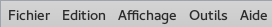
Le menu Fichier
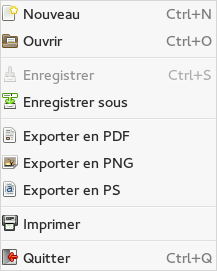
Nouveau : ouvre un nouveau document.
Ouvrir : ouvre un document existant. Une fenêtre sélecteur de fichiers apparaît et propose les fichiers de configuration de vista (extension .vista).
Enregistrer : enregistre le document courant, le nom du fichier se trouve dans la barre de titre de la fenêtre vista.
Enregistrer sous : enregistre le document courant sous un nouveau nom. Une fenêtre sélecteur de fichiers apparaît. Nommer les fichiers avec l'extension .vista .
Exporter en PDF, PS, PNG : exporte le document courant dans le format correspondant.
Le fichier est créé dans le répertoire /var/tmp.
Le nom du fichier est de la forme nom_datedebut_datefin.extension pour les formats pdf et ps. Pour le format png, un fichier par page est créé et de la forme nom_datedebut_datefin.numpage.png
Imprimer : imprime le document courant. Une fenêtre proposant le choix de l'imprimante apparaît. La configuration des paramètres de l'imprimante est sans effet.
Quitter : quitte vista.
Le menu Edition
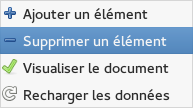
Ajouter un élément : ajoute un élément dans le container sélectionné (cf. §Créer un document).
Supprimer un élément : supprime l' élément sélectionné (cf. §Créer un document).
Visualiser le document : visualise le document (cf. §Visualiser le document).
Recharger les données : visualise le document en forçant le rechargement des données (cf. §Visualiser le document).
Le menu Affichage
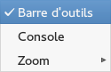
Barre d'outils : affiche la barre d'outils (cf. §La barre d'outils).
Console : affiche la zone console au bas de la fenêtre vista. Cette zone contient les messages de logs de vista. Elle est également pilotée par 3 boutons :
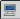
affiche la zone console.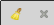
efface et ferme la zone console.Zoom : zoom sur la fenêtre de visualisation. Le niveau de zoom se choisit dans le sous-menu associé :
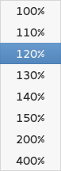
Le menu Outils
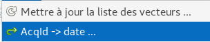
Mettre à jour la liste des vecteurs ... : ouvre une boîte de dialogue dans laquelle on choisit la plateforme pour laquelle on veut mettre à jour la liste des vecteurs.
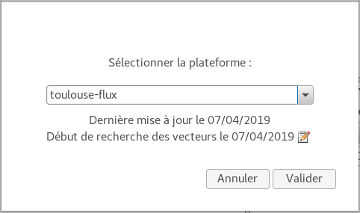
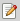
AcqId -> date ... : ouvre une boîte de dialogue dans laquelle on saisit un AcqId pour obtenir la date correspondante.
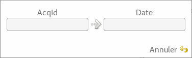
Le menu Aide
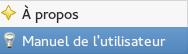
A propos : affiche la version de vista.
Manuel de l'utilisateur : affiche cette aide.